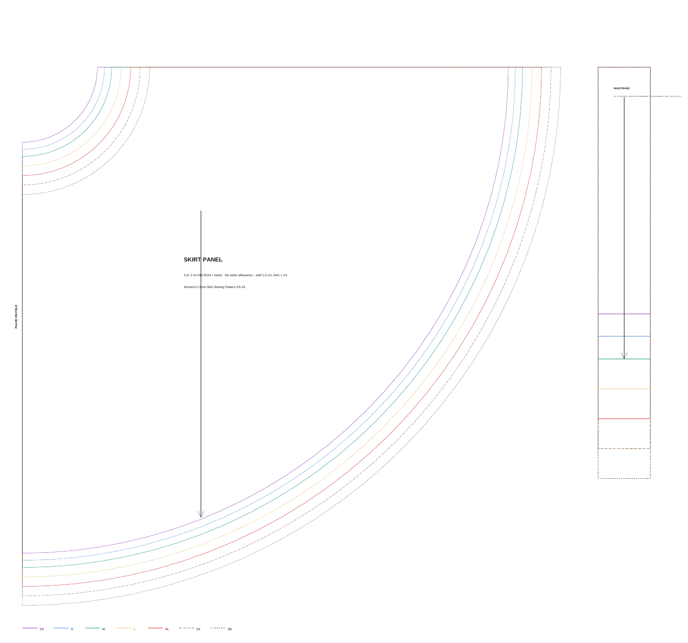

Women's Circle Skirt Sewing Pattern XS-3X
Nested sizes XS–3X · no seam allowance · A4/Letter or A0

Size chart (body measurements)
| Size | Bust | Waist | Hip | Hip depth |
|---|
| XS | 80 cm / 31.5" | 62 cm / 24.4" | 88 cm / 34.6" | 20.0 cm |
| S | 86 cm / 33.9" | 68 cm / 26.8" | 94 cm / 37.0" | 20.5 cm |
| M | 92 cm / 36.2" | 74 cm / 29.1" | 100 cm / 39.4" | 21.0 cm |
| L | 100 cm / 39.4" | 82 cm / 32.3" | 108 cm / 42.5" | 21.0 cm |
| XL | 108 cm / 42.5" | 90 cm / 35.4" | 116 cm / 45.7" | 21.5 cm |
| 2X | 116 cm / 45.7" | 98 cm / 38.6" | 124 cm / 48.8" | 22.0 cm |
| 3X | 124 cm / 48.8" | 106 cm / 41.7" | 132 cm / 52.0" | 22.0 cm |
Choose by waist. Waist ease 1 cm. Length 55 cm (21.5 in).
Before you start
- A full circle skirt that twirls: one quarter-circle panel cut twice on the fold, a straight waistband and a side or back zip. Length 55 cm (21.5 in).
- No seam allowance included: add 1.5 cm (5/8 in) to straight edges and the waist, 1 cm at the hem.
- Good fabrics: cotton poplin, viscose, light crepe, chambray. Avoid stiff fabrics.
Printing
- Print at 100% / actual size. Check the test square (5 cm / 2 in) on page A1.
- Tape the pages by their labels, or print the A0 file at a copy shop.
Choosing your size
Choose by your waist measurement: the waist arc of each size is calculated so the full circle equals your waist + 1 cm ease. Hips don't matter for a circle skirt.
You will need
- Fabric: about 2.2 m (2.4 yd) of 150 cm (59 in) wide fabric for XS–L, 2.6 m (2.8 yd) for XL–3X
- 18–20 cm zip, light interfacing for the waistband, 1 button or hook
Sewing steps
- Fold the fabric twice so you have a folded edge; cut 2 panels with the straight edge on the fold.
- Stay-stitch the waist curve so it doesn't stretch.
- Sew one side seam; on the other side insert the zip, then close the rest.
- Interface the waistband, sew it on, fold, close and add the button.
- Let the skirt hang for 24 hours before hemming (the bias parts drop), then level the hem and sew a narrow 1 cm hem.
Tips
- For a shorter or longer skirt, change the hem line evenly all round.
- For a half-circle skirt, cut one panel on the fold for the front and one for the back from a half-circle drawn with double the waist radius.
© AureliaVenn · Personal use and small-batch handmade sales. Please don't share or resell the pattern files. Drafted with the help of software from a standard size chart.